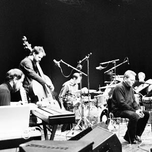

Nachtvolk
Schönenbach Projekt
fonorum 8004 • 2005-11-18

Konzeption
Künstler
- Ingvo Clauder – Tasten
- Claudio Spieler – Perkussion
- Marc Vogel – Schlagzeug
- Lucas Dietrich – (Kontra-)Bass
- Augustin Jagg – Sprecher
- Oliver Rath – Tontechnik
Die Sagenwelt Vorarlbergs als Leitmotiv des Konzepts und der Komposition – Musik in Verbindung mit individueller Akustik (Fremdgeräusche, Natur) – Fokussierung der Konzeption in einer autarken, speziellen Umgebung (Vorsäß Schönenbach, Propstei St. Gerold) – Komposition in Progress unter Einbezug der speziellen geographischen und räumlichen Verhältnisse (Raumakustik des Holzhauses, Wyberhus, spezielle Landschaft, Natur) – Verbindung akustisch – elektronisch (Aufnahme, Nachbearbeitung)
Distribution
- Buy download: iTunes
- Buy at: www.fonorum.com/shop/